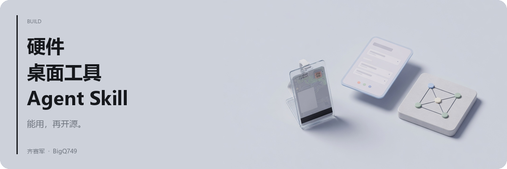

GitHub：https://github.com/BigQ749
项目：
- TRAE K2 — 大赛工牌烧成闪电说 / PPT 遥控器。
- QuotaDock — 桌面额度浮窗。
- Douyin Video Analyzer — 抖音链接进，文字稿和摘要出。
- 穹顶 — 本地优先的企业 Agent 工作台。
- Typhoon Relief — 附近 SOS + 防灾科普。
- Codex Growth Skills — 学习记忆和成长教练。
联系：@BigQ749

GitHub：https://github.com/BigQ749
项目：
联系：@BigQ749